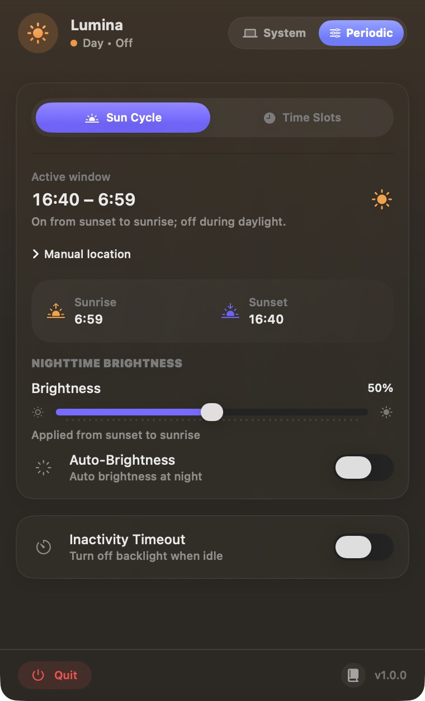
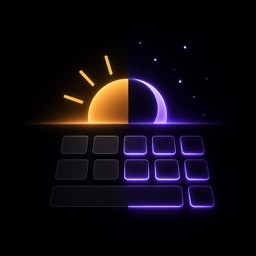
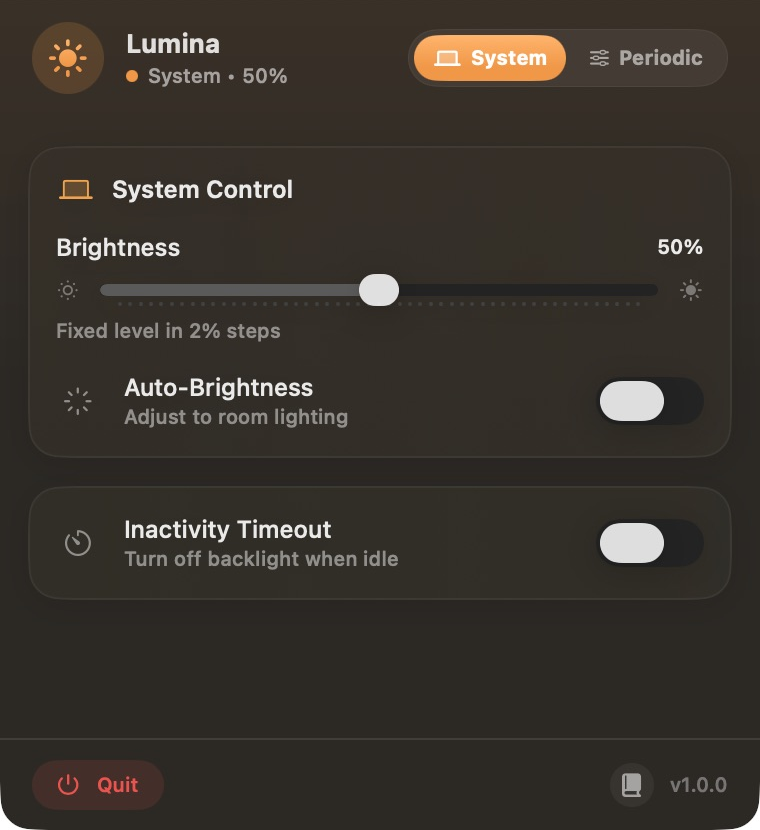
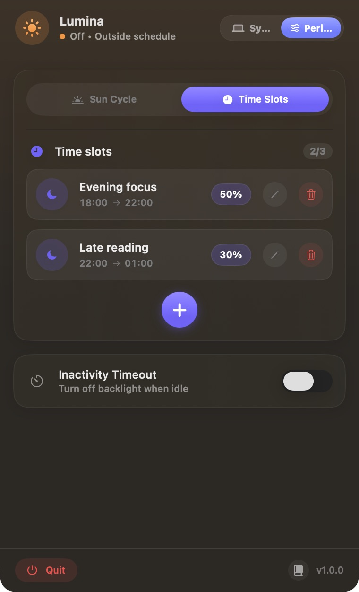
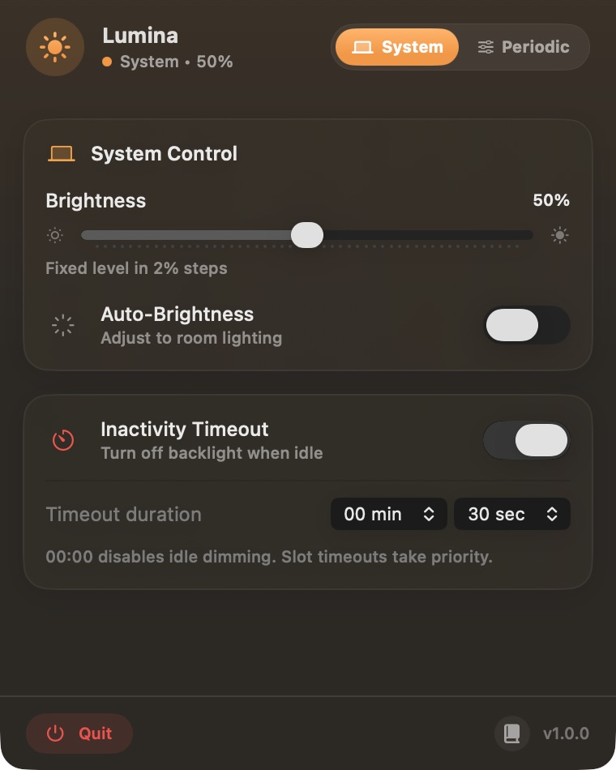

01 / SUN CYCLESun goes down.
Sun goes down.
Keys light up.
Pick your night brightness. Lumina applies it from sunset to sunrise and keeps the backlight off during daylight.



LuminaFREE & OPEN SOURCE · PUBLIC BETA
A little Mac app for the lights beneath your keys. Choose a brightness, follow the sun, or let your daily routine decide.
macOS 14+ · Supported backlit Mac keyboards
Universal Intel & Apple silicon download · Not Apple-notarized

LESS ADJUSTING. MORE DOING.
For late work, early starts, and all the moments you step away.
Pick your night brightness. Lumina applies it from sunset to sunrise and keeps the backlight off during daylight.

Make up to three daily slots, each with its own brightness. Evening focus can flow into a dimmer late-night session.

Set a timeout to turn the backlight off while you’re idle. Return to your keyboard or trackpad to resume the current mode.

Actual Lumina screenshots with sample settings. Click any screenshot to enlarge. Sun times depend on your date, time zone, and chosen location.
SUN CYCLE, EXPLAINED
During the day, the keyboard backlight stays off. After sunset, your chosen night brightness takes over. An inactivity timeout can turn it off while you’re away.
Try this example day. This illustration explains the behavior; it doesn’t control your Mac.
Example: Sun Cycle + 50% night brightness + 30-second idle timeout.
SMALL APP. USEFUL DETAILS.
Open Lumina from the sun or moon in your menu bar. A compact panel puts brightness, schedules, and timers within reach.
Set a fixed brightness in 2% steps, or switch on Auto-Brightness to follow your Mac’s ambient light sensor.
Quick brightness previews last three seconds, then your current mode resumes.
AT HOME ON YOUR MAC
No analytics, ads, telemetry, or automatic update checks. Your preferences stay on your Mac.
Fixed brightness and time slots need none. For Sun Cycle, enter coordinates manually or choose Mac Location.
Manual coordinates and solar calculations work offline. The optional IP Estimate contacts ipapi.co only after confirmation, sharing your public IP.
Saved coordinates are rounded to 0.1° and stored locally without encryption. Apple’s Location Services may use the network. Idle detection reads elapsed time since input; it doesn’t record what you type. Read the privacy details
LITTLE APP. LOVELY LIGHT.
Free to download. Open source under the MIT license. No subscription or account required.
macOS may block the first launch. Read the installation steps and compatibility notes before downloading.
Open the DMG, drag Lumina into Applications, and eject the disk image. Quit any older Lumina first.
If macOS blocks it, verify the official release and decide whether you trust it. Apple explains the per-app Privacy & Security → Open Anyway option. Read Apple’s guidance ↗
Click Lumina in your menu bar, finish setup, and choose System Control or Periodic mode. Keep Lumina running for automation and idle timeouts.
Keep macOS security protections enabled. A managed Mac may disallow unnotarized apps. Full installation, update & uninstall guide ↗
BEFORE YOU INSTALL
Lumina targets macOS 14 or later and includes Intel and Apple silicon versions in one download. It needs a backlit keyboard supported by Apple’s private CoreBrightness framework. Real hardware checks so far cover one Apple silicon Mac; Intel, other Mac models, older macOS versions, and external keyboards need compatibility reports. This is a beta, so hardware support isn’t guaranteed.
CoreBrightness is an Apple system framework that Lumina uses to talk to supported keyboard lighting. Its private interface isn’t a stable public API: a macOS update can change it. Lumina checks the interface before using it and reports unsupported hardware, but that cannot guarantee future compatibility. The app runs without App Sandbox, needs no administrator or Accessibility access, and is distributed outside the Mac App Store. Read the security notes.
Lumina controls keyboard backlight brightness. It doesn’t change screen brightness, screen color temperature, or the color of your keyboard LEDs. The warm and indigo lighting in the device illustration is artistic scene lighting.
Sun Cycle turns the backlight off in daylight and applies your night setting from sunset to sunrise. Time Slots allow up to three non-overlapping daily windows, including windows that cross midnight; the backlight is off outside them. A slot’s nonzero idle timeout overrides the global timer. A slot timeout of 00:00 uses the global setting; a global timeout of 00:00 disables global idle dimming.
Keep Lumina running for its automation and idle timeouts to apply. A normal quit restores the brightness and ambient setting captured at launch. A crash or force quit may prevent that restoration; you can use macOS’s keyboard brightness controls. Lumina doesn’t install a login item or an updater, so reopen it yourself after restarting.
This release uses a local integrity signature without a personal Developer ID certificate. Notarized Developer ID distribution normally requires a paid Apple Developer membership. The project currently uses a free distribution route, so expect a first-open warning. A matching checksum confirms download integrity; it isn’t an independent verification of the publisher or an Apple malware review. You can also build from the source.